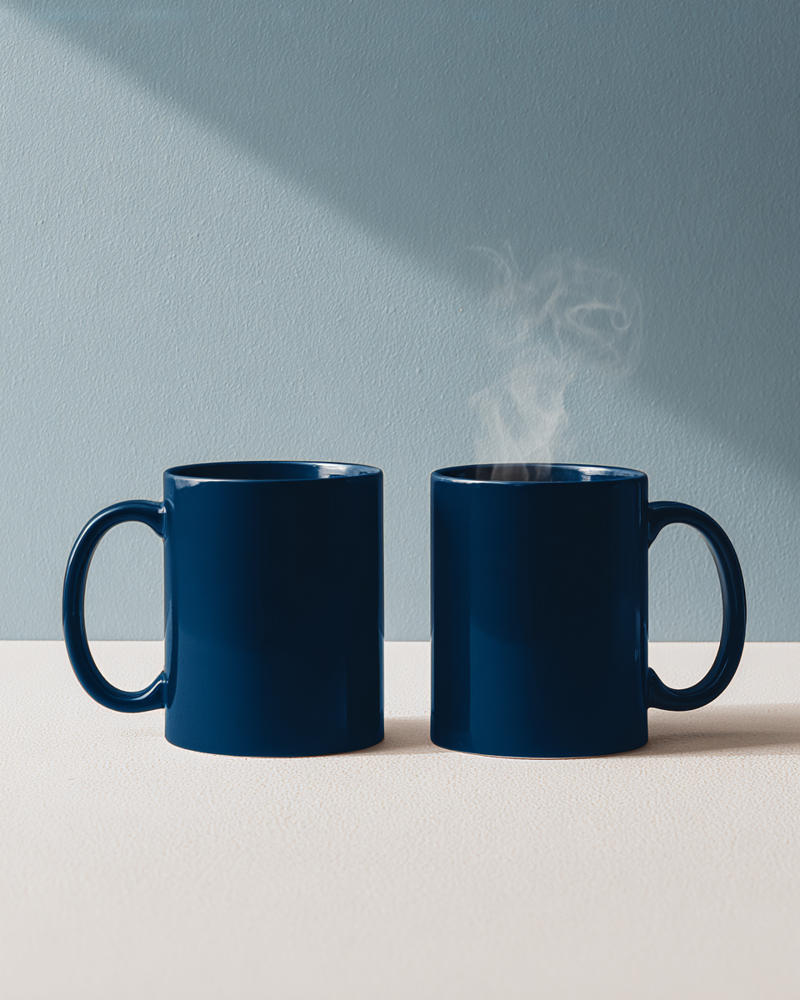
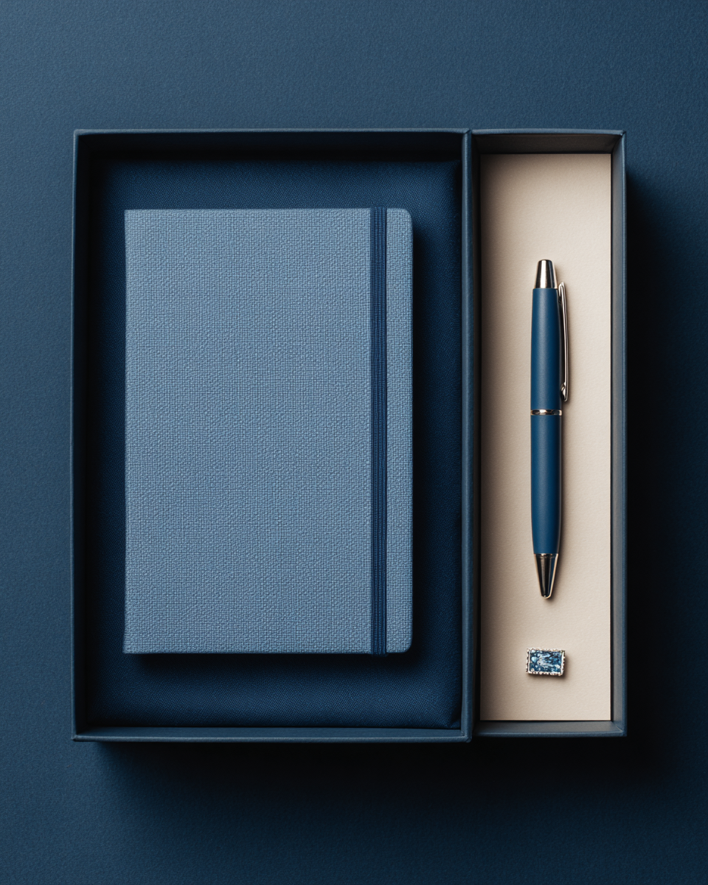
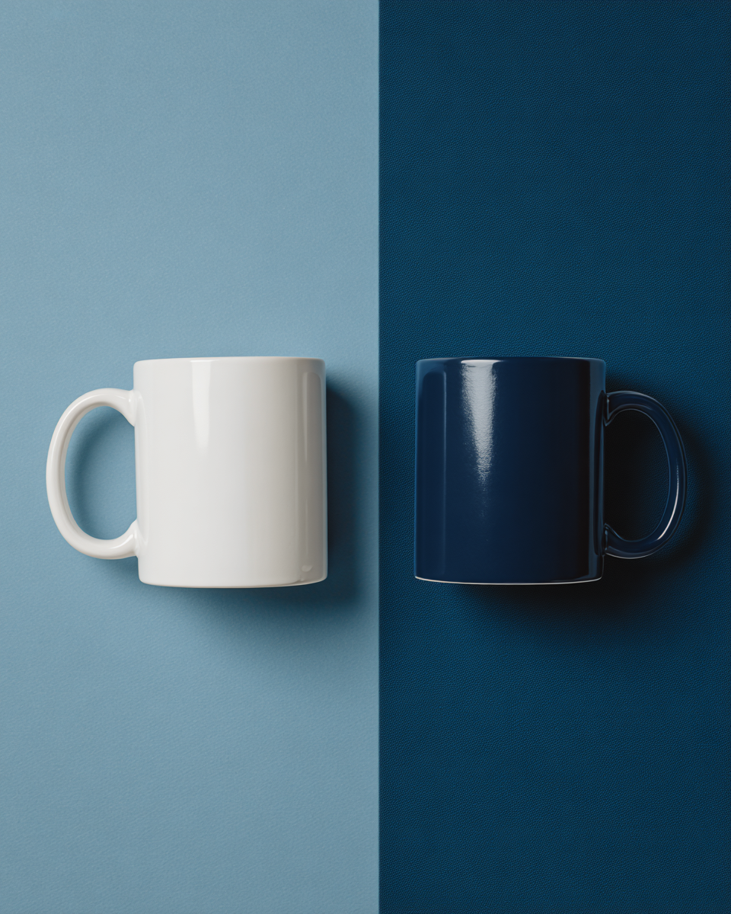

P2P-челлендж
+30
Неделя благодарности
Записаться
Team Player · 7 месяцев в команде
Видеомонтажёр, отдел предэфирной подготовки. Твой вклад в этом месяце — заметен.
+340 Coins получено за месяц
Первая коллекция в новом фирстиле: худи, кружка, бокс. Обмен на Coins.
38 инициатив, 6 взяты в работу. Спасибо команде за вовлечённость.
Выбираем лимит-дроп: Team Edition или Inside Jokes Edition.




По заработанным за период Coins — траты в Store рейтинг не снижают.